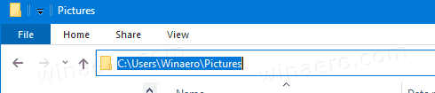
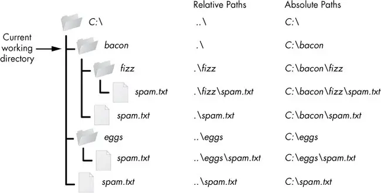

Keyboard shortcuts:
N/СпейсNext Slide
PPrevious Slide
OSlides Overview
ctrl+left clickZoom Element
If you want print version => add '
?print-pdf' at the end of slides URL (remove '#' fragment) and then print.
Like: https://wwwcourses.github.io/...CourseIntro.html?print-pdf
Created for

Iva E. Popova, 2022-2023,

Introduction to OS Module
Introduction to OS Module
Introduction to OS Module
- What is the OS Module?
- The os module in Python is a built-in library that provides a portable way of using operating system dependent functionality such as reading or writing to the file system, managing paths, and interacting with the operating system.
- Key Features of the OS Module
- The os module provides a rich set of methods that are used to perform various operating system tasks such as file and directory manipulation, retrieving environment variables, and more.
- This module abstracts the underlying operating system functionality to provide a uniform interface across different operating systems.
- Importance of the OS Module
- For Python programmers, the os module is crucial because it allows the creation of platform-independent scripts. This means that the same Python code can often run on multiple platforms without modification, enhancing the portability and scalability of applications.
Basic Concepts: Paths and Current Working Directory
Basic Concepts: Paths and Current Working Directory
What are Paths?
- Paths are addresses that tell the computer where to find files and folders in its storage system, much like how an address helps you find a house in a city.
- Windows uses backslashes (\) to separate directory levels in the path.
- Linux and macOS use forward slashes (/) to separate directory levels in the path.
- Root path
- Windows can have many root directories designated with letters, such as C: or D:
- In Linux and macOS there is only one root directory, designated as / and
C:\Users\nemsys\tmp.txt
/home/nemsys/tmp.txt
CWD - Current Working Directory
- The Current Working Directory refers to the directory in which a user or a program is operating at a given time.
- When you open a command prompt or terminal session, you are placed in a default directory (usually your user directory). This is your initial current working directory. Every time you execute commands that involve files and directories without specifying a full path, those commands will operate relative to the CWD.
- How to know CWD while working on Command Prompt/Terminal
- How to know CWD while working with Windows Explorer
- When browsing files, the CWD is display in Address Bar, when you click on it: 
# Windows (the CWD is shown in the prompt )
C:\Users\nemsys\MyDocuments>cd
C:\Users\nemsys\MyDocuments
# Linux/MacOS
nemsys@debian:~/Documents$ pwd
/home/nemsys/Documents
{kind=link}
Absolute vs Relative Paths
- Absolute Path: specifies the complete path starting from the root directory.
- On Windows, it typically starts with a drive letter followed by a colon.
- On Linux and macOS, it typically starts with a forward slash (/) representing the root directory.
- Relative Path: specifies the path relative to the current working directory
absolute_path = r"C:\Users\Username\Documents\example.txt"
absolute_path = "/home/username/Documents/example.txt"
# if CWD = '/home/username'
relative_path = "Documents/example.txt"
Absolute vs Relative Paths
{kind=link}
- The `.` path name represents the CWD
- The `..` path name represents the parent directory, which is the directory one level up from the CWD
CWD in Python script: os.getcwd() and os.chdir()
- The CWD is the directory from which your Python script is executed, and it plays a pivotal role in how Python accesses and manipulates files. Understanding and managing the CWD effectively can help ensure that your scripts work as intended, especially when interacting with the file system.
- Getting the Current Working Directory:
- To find out what the current working directory is in your Python script, you can use the getcwd() function from the os module. This function returns the absolute path of the directory in which the Python interpreter is currently running.
- Changing the Current Working Directory
- If you need to change the current working directory during the execution of your Python script, you can use the chdir() function, also from the os module. This allows your script to modify its working directory context, which affects where it reads from and writes to files by default.
import os
cwd = os.getcwd()
print("Current Working Directory:", cwd)
import os
# Change the directory to "/path/to/your/directory"
os.chdir("/path/to/your/directory")
# Verify the change
new_dir = os.getcwd()
print("The current working directory has been changed to:", new_dir)
Directory Manipulations with Python
Directory Manipulations with Python
Introduction
- Understanding how to manipulate directories is crucial for various tasks in programming, such as organizing files, managing projects, and handling file I/O operations.
- All filesystem operations will be relative to CWD, unless you specify an absolute (full) path.
Listing Directories: os.listdir()
- Listing Contents of a Directory
- To list the contents of a directory, you can use the os module's listdir() function.
- Filtering Directory Contents
- You can filter the directory contents based on specific criteria using list comprehensions or the filter() function.
import os
contents = os.listdir("directory_path")
print(contents)
# Output: ['file1.txt', 'file2.txt', 'folder1', 'folder2']
import os
# get list of files only:
files = [f for f in os.listdir("directory_path") if os.path.isfile(f)]
print(files)
# Output: ['file1.txt', 'file2.txt']
List the entire directory content: os.walk()
- To list the entire directory content, including subfolders, you can use the the os.walk function:
- Next example demonstrate how to list the entire content of CWD:
def list_dir_contents(dir_path):
"""
This function recursively iterates through the directory tree, yielding root, dirs, and files at each level.
It then prints the full path of each directory and file
Args:
dir_path: The path to the directory to list.
Returns:
None
"""
for root, dirs, files in os.walk(dir_path):
for directory in dirs:
full_dir_path = os.path.join(root, directory)
print(f"Directory: {full_dir_path}\n")
for filename in files:
full_file_path = os.path.join(root, filename)
print(f"File: {full_file_path}\n")
dir_path = os.getcwd()
list_dir_contents(dir_path)
Creating Directories: os.mkdir() and os.makedirs()
- Creating a Directory
- To create a directory in Python, you can use the os.mkdir() function.
- Creating Nested Directories
- You can create nested directories by specifying the full path when calling the os.mkdirs() function.
- If a directory already exists, these functions will throw File exists error
import os
os.mkdir("parent_directory")
import os
os.makedirs("parent_directory/child_directory")
Deleting Directories: os.rmdir() and shutil.rmtree()
- Deleting a Directory
- To delete a directory in Python, you can use the os module's rmdir() function.
- Note that,
os.rmdir()removes only empty directory. Otherwise,OSErroris raised. - This is safer than
os.removedirs(), which will delete even non-empty directories. - Deleting a Directory Tree
- To delete a directory and all its contents recursively, you can use the shutil module's rmtree() function.
import os
os.rmdir("directory_path")
import shutil
shutil.rmtree("directory_path")
os.path Module
os.path Module
Introduction
- The `os.path` module in Python provides functions for common path manipulations, making it easier to work with file and directory paths in a platform-independent manner. This allows your code to work seamlessly across different operating systems.
- Some of the commonly used functions in the os.path module include:
- os.path.join(): Concatenates one or more path components intelligently, taking into account the platform-specific path separator.
- os.path.abspath(): Returns the absolute path of a given path.
import os
joined_path = os.path.join("folder", "file.txt")
print("Joined Path:", joined_path)
# Output: Joined Path: folder/file.txt
import os
abs_path = os.path.abspath("file.txt")
print("Absolute Path:", abs_path)
# Output: Absolute Path: /full/path/to/file.txt
Common Functions
- os.path.basename(): Returns the base name of a path (i.e., the filename without the directory).
- os.path.dirname(): Returns the directory name of a path.
- os.path.exists(): Checks whether a path exists.
import os
file_name = os.path.basename("/path/to/file.txt")
print("File Name:", file_name)
# Output: File Name: file.txt
import os
dir_name = os.path.dirname("/path/to/file.txt")
print("Directory Name:", dir_name)
# Output: Directory Name: /path/to
import os
path = "/path/to/file.txt"
exists = os.path.exists(path)
print("Path Exists:", exists)
# Output: Path Exists: True (or False if the path doesn't exist)
Common Functions
- os.path.isfile(): Checks whether a path is a regular file.
- os.path.isdir(): Checks whether a path is a directory.
import os
file_path = "/path/to/file.txt"
is_file = os.path.isfile(file_path)
print("Is a File:", is_file)
# Output: Is a File: True (or False if the path is not a file)
import os
dir_path = "/path/to/directory"
is_dir = os.path.isdir(dir_path)
print("Is a Directory:", is_dir)
# Output: Is a Directory: True (or False if the path is not a directory)
Operating System Information
Operating System Information
Operating System Information
- os.name
- Provides the name of the operating system dependent module imported.
- os.environ
- Returns a dictionary representing the user's environmental variables.
- os.system(command)
- Executes the command (a string) in a subshell.
import os
print(os.name)
import os
print(os.environ)
import os
os.system('echo Hello World')
the sys module
the sys module
Overview
sysis a built-in module, which contains Python interpreter's specific parameters and functions- Reference: sys @python.org
>>> import sys
>>> dir(sys)
['__displayhook__', '__doc__', '__excepthook__', '__interactivehook__', '__loader__', '__name__', '__package__', '__spec__', '__stderr__', '__stdin__', '__stdout__', '
_clear_type_cache', '_current_frames', '_debugmallocstats', '_getframe', '_home', '_mercurial', '_xoptions', 'abiflags', 'api_version', 'argv', 'base_exec_prefix', 'ba
se_prefix', 'builtin_module_names', 'byteorder', 'call_tracing', 'callstats', 'copyright', 'displayhook', 'dont_write_bytecode', 'exc_info', 'excepthook', 'exec_prefix
', 'executable', 'exit', 'flags', 'float_info', 'float_repr_style', 'get_coroutine_wrapper', 'getallocatedblocks', 'getcheckinterval', 'getdefaultencoding', 'getdlopen
flags', 'getfilesystemencoding', 'getprofile', 'getrecursionlimit', 'getrefcount', 'getsizeof', 'getswitchinterval', 'gettrace', 'hash_info', 'hexversion', 'implementa
tion', 'int_info', 'intern', 'is_finalizing', 'last_traceback', 'last_type', 'last_value', 'maxsize', 'maxunicode', 'meta_path', 'modules', 'path', 'path_hooks', 'path
_importer_cache', 'platform', 'prefix', 'set_coroutine_wrapper', 'setcheckinterval', 'setdlopenflags', 'setprofile', 'setrecursionlimit', 'setswitchinterval', 'settrac
e', 'stderr', 'stdin', 'stdout', 'thread_info', 'version', 'version_info', 'warnoptions']
get current version number of Python
sys.version- A string containing the version number of the Python interpreter plus additional information.sys.version_info- A tuple containing the five components of the version number: major, minor, micro, releaselevel, and serial.- Use case: specify version requirements directly in the code
import sys
print(sys.version)
# 3.12.0 (main, Jan 2 2024, 16:26:01) [GCC 11.4.0]
print(sys.version_info)
# sys.version_info(major=3, minor=12, micro=0, releaselevel='final', serial=0)
import sys
if sys.version_info[0] == 2:
print("This program requires Python 3 or above. You are using Python 2.")
elif sys.version_info[0] == 3:
print("Python 3 is running")
get interpreter absolute path
sys.executable- A string giving the absolute path of the executable binary for the Python interpreter
import sys
print(sys.executable)
#/usr/bin/python3
get/set module search path
sys.path- A list of strings that specifies the search path for modules. Initialized from the environment variable PYTHONPATH, plus an installation-dependent default.- You can adjust the module search path at runtime by appending the desired path to
sys.pathlist: - If you want to use 'module1' which is in "/media/user/data/my_modules":
import sys
for path in sys.path:
print(path)
#/media/user/data/projects/examples
#/usr/lib/python312.zip
#/usr/lib/python3.12
#/usr/lib/python3.12/lib-dynload
#/usr/local/lib/python3.12/dist-packages
#/usr/lib/python3/dist-packages
#/usr/lib/python3.12/dist-packages
import sys
# add 'my_modules' to path:
sys.path.append('/media/user/data/my_modules')
from module1 import foo
foo()
get the size of an object in bytes
sys.getsizeof()- Return the size of an object in bytes.- Note, that
sys.getsizeof()function returns the size of the object itself, not the size of the elements it contains or references. - For a list, the size reported by sys.getsizeof() includes the size of the list's overhead plus space for pointers to the elements it contains, but not the size of the elements themselves
import sys
from functools import reduce
x = 1000
l = [1,2,3,4,5,6,7,8,9,10]
int_object_memory = sys.getsizeof(x)
list_object_memory = sys.getsizeof(l)
list_elements_memory = reduce( lambda a,el: a+sys.getsizeof(el), l, 0)
print(int_object_memory) # 28
print(list_object_memory) # 136
print(list_elements_memory) # 280
Terminate the script
sys.exit([status])- Terminate the script with an optional exit status.- exit status zero is considered "successful termination" and any nonzero value is considered "abnormal termination" by shells and the like
import sys
sys.exit(0) # successful termination
sys.argv: accessing command-line arguments
sys.argv: accessing command-line arguments
Overview of command-line arguments
- Command-line arguments are strings of text used to pass additional information to a program at the time of its invocation. They are typically used to specify options, flags, or data for program operations.
- Usually these arguments are used to control the program's operation, to provide necessary data for processing, or customize the program's behavior without needing to modify the program's source code
- Command-line arguments are particularly useful for automating tasks, configuring scripts to run in different modes, or when the program is part of a larger pipeline in software workflows.
- A simple use case is allowing users to query the script for usage information - a common feature in command-line tools and applications.
- Command line arguments must follow the script name by a space.
- Multiple command line arguments must be separated from each other by space.
$ python greet_user.py --help
Usage: python greet_user.py [options]
Options:
--help Show this help message
--name User name (string)
--age User age (integer)
$ python greet_user.py --name=Ada --age=23
Access command line arguments in Python
- In a Python script you can get command-line argument with
sys.argvlist: - Note that the script name itself is passed implicitly as the first argument!
- i.e.
sys.argv[0] will always store the script name. - If you need only the list of command-line arguments, you can just slice sys.argv:
sys.argv[1:]
import sys
print(f"Script Name: {sys.argv[0]}")
print(f"Arguments: {sys.argv[1:]}")
###Output of: python greet_user.py --name=Ada --age=23
#Script Name: greet_user.py
#Arguments: ['--name=Ada', '--age=23']
Command line arguments - examples
- Lets have next script, which just prints argv list:
- Now, let's execute script with different command-line arguments:
import sys
print('Argument List:', sys.argv)
# call script without arguments:
$ python argv_examples.py
Argument List: ['argv_examples.py']
# call script with 1 argument:
$ python argv_examples.py arg1
Argument List: ['argv_examples.py', 'arg1']
# call script with 3 arguments:
$ python argv_examples.py arg1 23 -45.6
Argument List: ['argv_examples.py', 'arg1', '23', '-45.6']
Using argparse for Advanced Argument Parsing
Introduction to argparse
- The argparse module makes it easy to write user-friendly command-line interfaces even for complex scenarios
- The program defines what arguments it requires, and argparse figures out how to parse those out of sys.argv.
- Example: simple script that echoes a message a specified number of times
- argparse handles positional arguments (here,
message) that are required, and optional arguments (here,--repeat) that the user can specify to alter the script's behavior. - The argparse module automatically generates help and usage messages and issues errors when users give the program invalid arguments.
import argparse
# Create the parser
parser = argparse.ArgumentParser(description='Example script demonstrating argparse usage.')
# define positional required argument:
parser.add_argument('message', help='the message to be repeated')
# define optional argument:
parser.add_argument('--repeat', type=int, default=1, help='How many times to repeat the message (default: %(default)s)')
# Parse arguments
args = parser.parse_args()
# Use arguments
for _ in range(args.repeat):
print(args.message)
###Output of: $ python echo.py hello --repeat 3
# hello
# hello
# hello
###Output of: $ python echo.py --help
# usage: echo.py [-h] [--repeat REPEAT] message
# Example script demonstrating argparse usage.
# positional arguments:
# message the message to be repeated
# options:
# -h, --help show this help message and exit
# --repeat REPEAT How many times to repeat the message (default: 1)
###Output of: python3 echo.py
# usage: echo.py [-h] [--repeat REPEAT] message
# echo.py: error: the following arguments are required: message